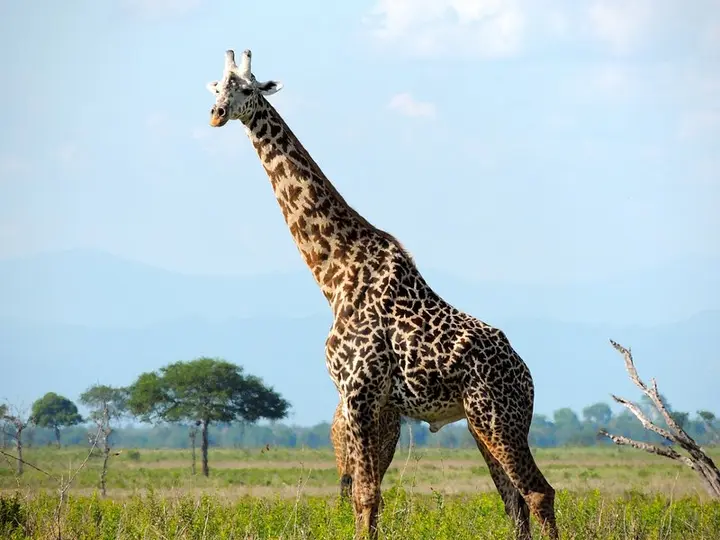
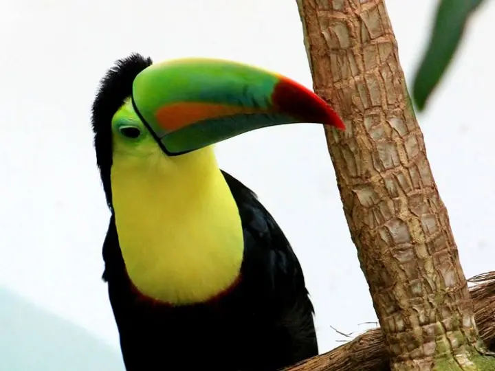
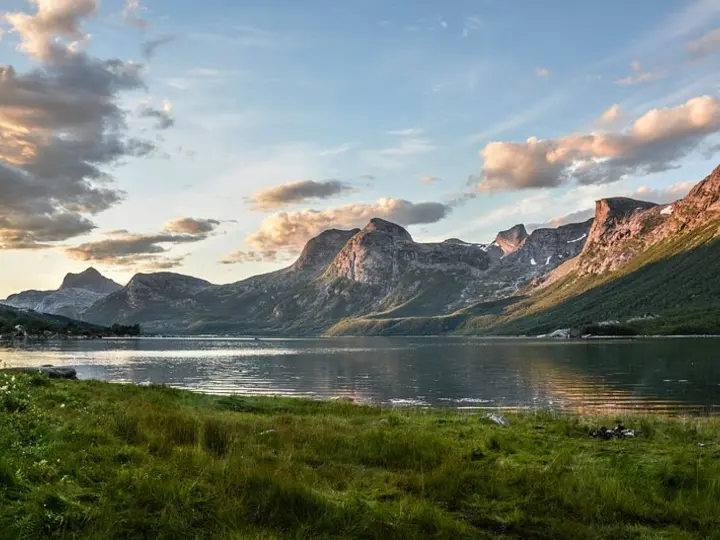
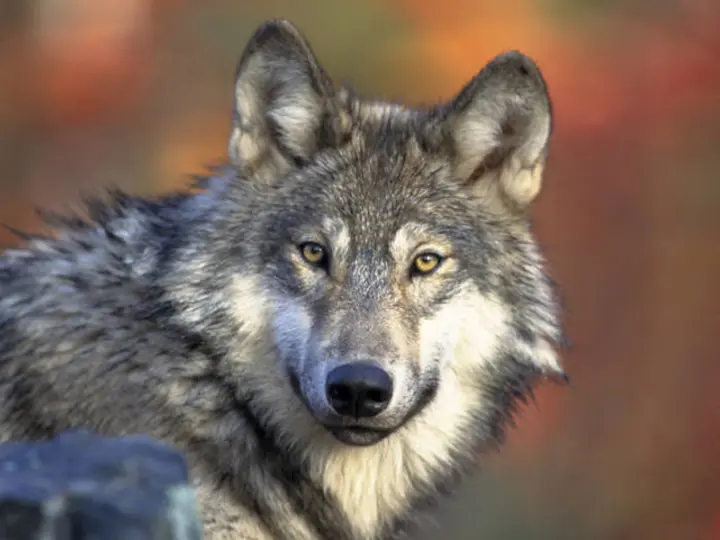
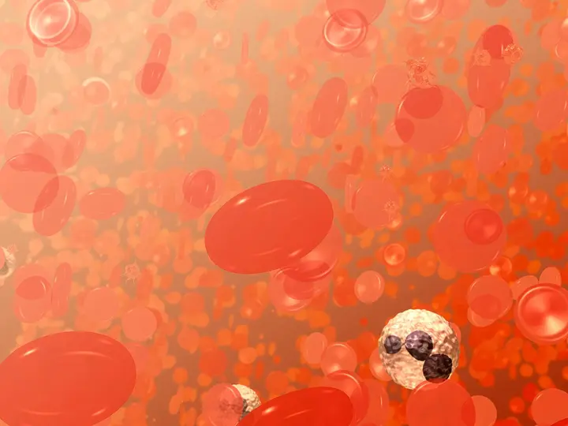
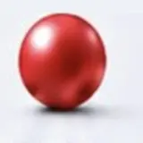

Rescue & Emergency Care
Immediate support for animals in critical need
From Nature. Through Science. Back to Nature.
The BHOC Species & Biodiversity Protection Initiative works at the intersection of science, veterinary medicine and conservation to support the health and survival of animals around the world.
A healthier tomorrow
for all species


Different species.
A shared tomorrow.
A world worth protecting
A healthier
tomorrow
for all species
Our conservation mission
We support the protection of endangered and Red Book species by advancing veterinary medicine, emergency care, research and international collaboration.
Explore the Red Book ProgramImmediate support for animals in critical need
Improving veterinary care in zoological institutions
Supporting recovery and return to natural habitats
Solutions for wildlife in remote and challenging environments
Our Focus Areas

Emergency care for wild animals
Photo: Andrea Hanks / The White HousePublic domainConservation of threatened species
Photo: Eric KilbyCC BY-SA 2.0
Veterinary support and collaboration
Photo: Rawpixel / free-images.comPublic domain / CC0
Care beyond traditional infrastructure
Photo: GP Schmahl / NOAAPublic domain
Cross-species insights for better medicine
Photo: Rawpixel / free-images.comPublic domain / CC0A growing scientific foundation
Photo: Rawpixel / PxHerePublic domain / CC0
Stronger together for greater impact
Photo: Rawpixel / public-domain archivePublic domain / CC0The science bridge
BHOC Therapeutics is developing a next-generation oxygen carrier designed to support veterinary medicine, including wildlife, exotic and endangered species. By improving oxygen delivery at the microcirculatory level, we aim to help more animals survive when every second counts.
Discover the Science


BHOC carrierCell-free molecular scaleCompatible with all blood types across species.3+ year shelf life at room temperature.Advancing oxygen delivery for a wilder tomorrow.